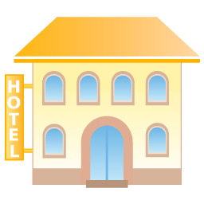

Your Road Trip from
{{start}} to {{destination}}
Total cost: ${{totalPrice}}
{% for hotel, price, city, starRating, dates, image in zipped %}
{% if image %}
{% else %}  {% endif %}
{{hotel}}
{{city}}
{{price}}
{{dates}}
{% endfor %}